DIY 树莓派一体机
1DIY 树莓派一体机
1.1效果图
一个运行着 Arch 系统的树莓派2，外接 HHKB PRO 2，你可以把它看作一个小电脑，小一体机，平板外接键盘。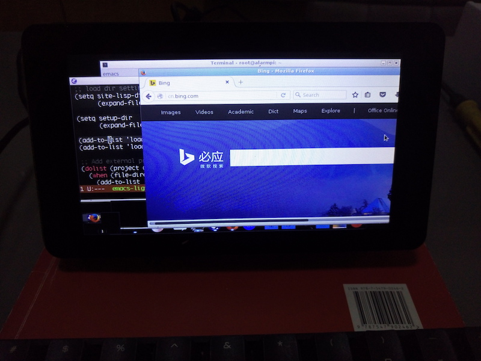1.2起因
很早在读书的时候就对树莓派很感兴趣，也可能是喜欢 linux 的原因，觉得小小的像电路板一样的东西竟然可以运行 linux，很是不可思议。玩树莓派，我没有玩电子控制方面的，单纯得跑系统，编译过内核，装过 Fedora，OpenSuSE，Arch，Gentoo 等等折腾，还买过一块 cubieboard4 充当个人服务器，感觉那个时候是自己 linux 技能提升最快的时候。之前树莓派官方出了一个 10 点触摸的官方显示器，颜值确实高，比淘宝那些山寨货漂亮多了。我第一时间就买了，第一自己确实很喜欢树莓派，第二我想把树莓派打造成一台小小的电脑。
:官方屏幕和 2B:

因为自从工作后用了 MAC 之后，便很久没有用过 linux，相比之前的“精通 ubuntu，centos，fedora，OpenSuSE，Arch，Gentoo 等操作系统的安装和重装，精通各种环境和平台的搭建等等”（哈哈，其实我 linux 各种技能也是很溜的），就好像遗忘了一个老朋友一样。之前看到别人拿着树莓派加一个 kendle 到野外编程，自己也想尝试一下。而 RMS 也偶尔拿着一个破旧电脑编程，挺酷的，我便觉得，是时候组装一个树莓派小电脑了。
:RMS 的电脑: 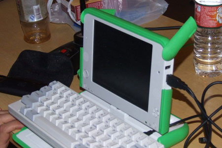
:树莓派外接 kendle 作为显示器:

1.3DIY
其实很简单，就是把一块木头挖空，把树莓派和屏幕嵌入进去，但是过程比较有趣。因为我做东西比较专注，所以制作的过程中没有拍照。
第一步,先把官方屏和驱动板装起来，网上有教程，把排线对接好，螺丝拧好，不过记住最重要的是 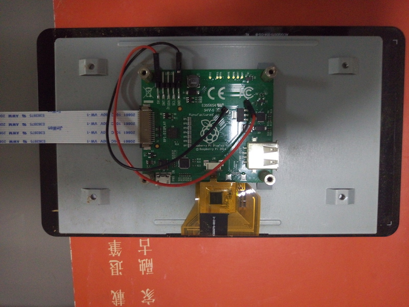
第二步,这一步比较考验 diy 能力，量出树莓派的宽高，做出一个木头做的盒子，还要留出树莓派主板的开口，看上去好想挺难的，其实不难，就是切割一块木头，固定好，然后用电钻一层层得打薄（好像挺蠢的，好像有更好的工具)。 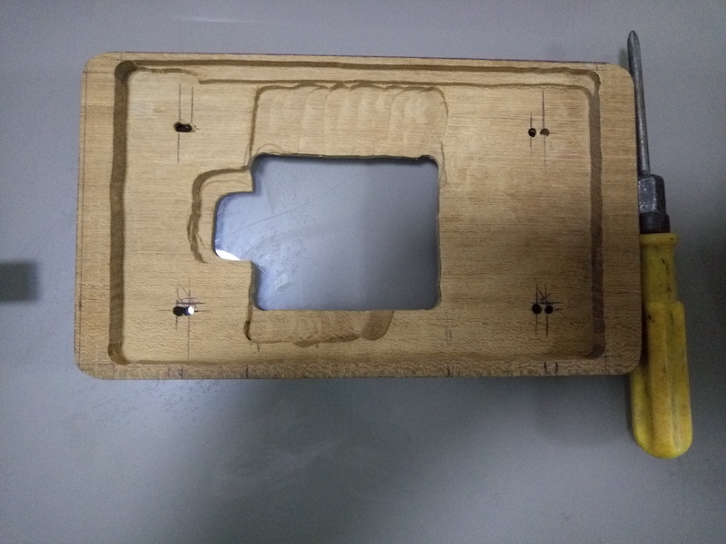
第三步,当然是树莓派组装上去了，注意木板上的开孔要对准，然后就是小心点别让修正木块的工具刮到树莓派的的线路。 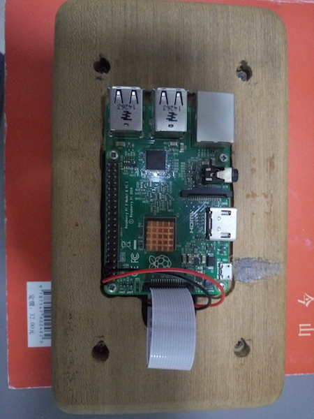
看看正面 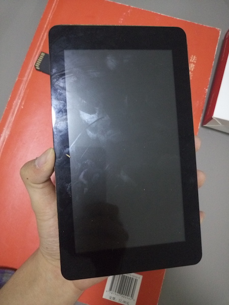
考虑支撑的问题，要开两个开孔，我在两边都开了，这样就可以竖着放和横着放。 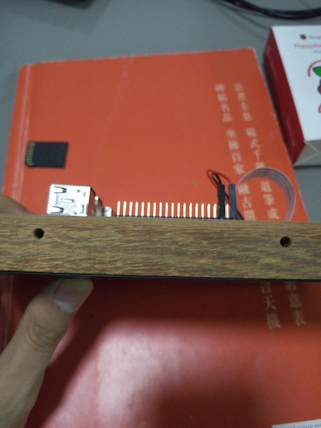 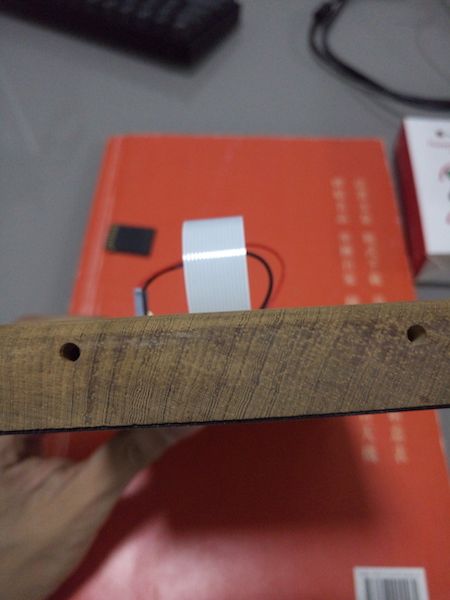 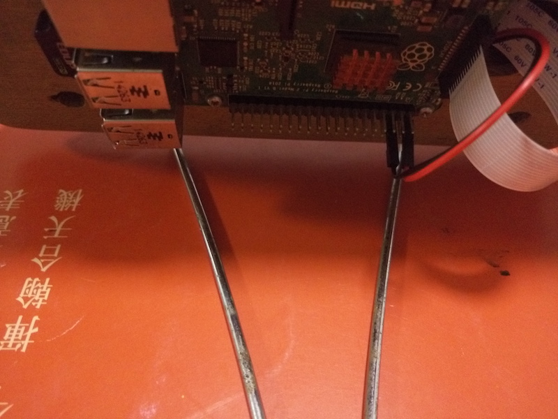 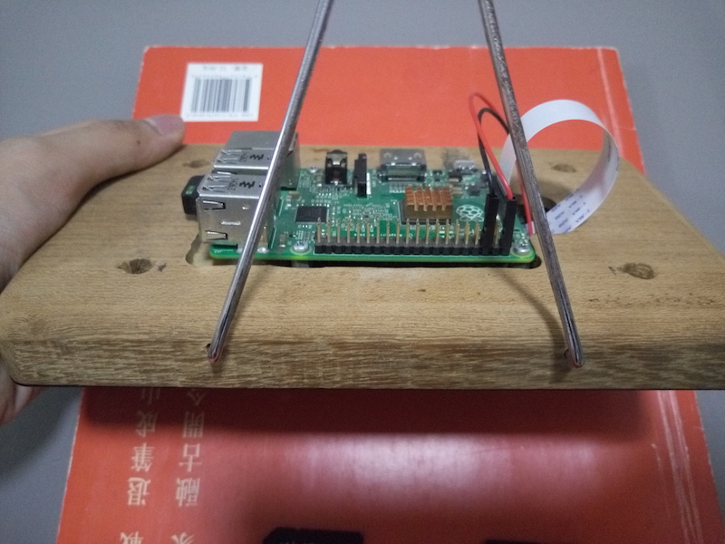
是不是很简单������，大功完成之后，我们可以装系统了，准备好 tf 卡，在官网上下系统，烧进去,当然，对于 pi1 和 pi2 来说，usb wifi 是必不可少的。 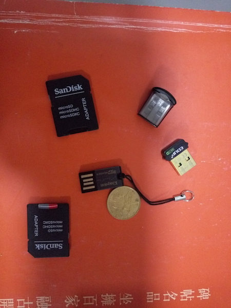
当然，我装了 Arch 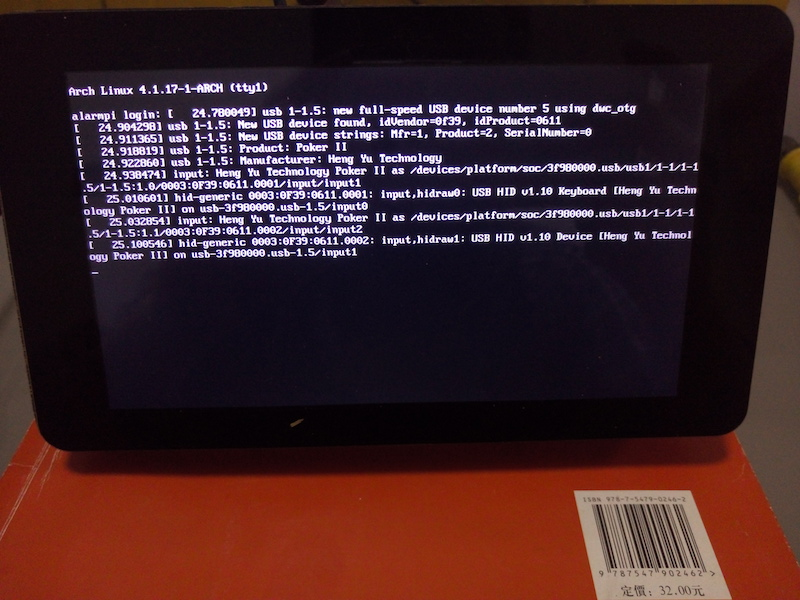
以下是谍照:
装了一个 kde，卡出翔了 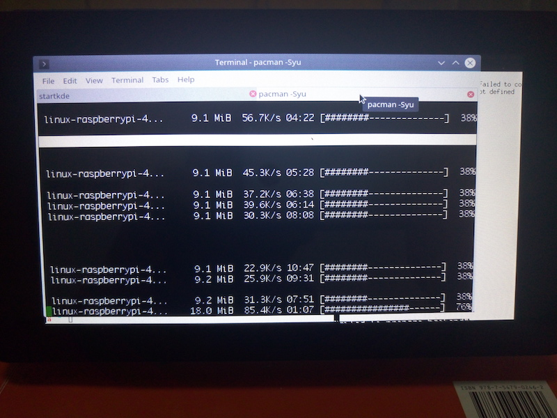
openbox + Cairo-Dock: 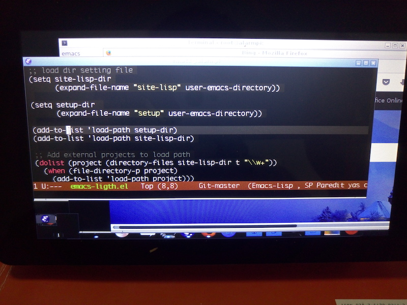
LXDE: 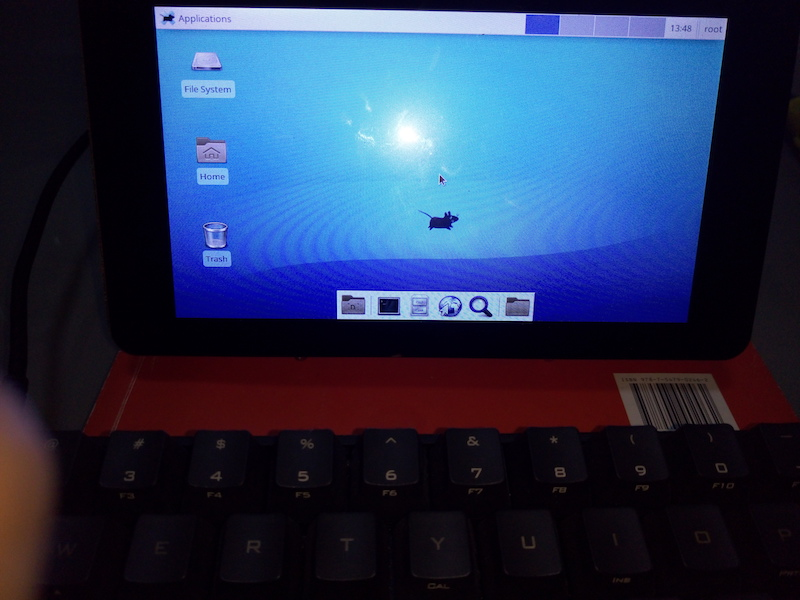